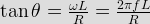
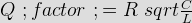

- Almost the entire mass of an atom is concentrated in the
VPIPcos &theata; = ½
Irms = ½
Irms = 0.5
IP = 1 / radiac; 2
VP = &radiac; 2. - In a series R-L circuit, the current & voltage are given as i = 1cos(314t – 20°), v = 10 cos (314t + 10°). Find the value of L.
Current lags voltage by (20 + 10) ° = 30 °
Also, Vm / Im = Z
Z =&radiac; {R2 + <ω L) 2}
tan 30° = ω L / R. - In a series R-L circuit, R = 20 ohms, while L = 40 mH. Find the value of supplied frequency if the input current lags the supply voltage by 60°
.
- The resistance of series RLC circuit is doubled and inductance is halved then bandwidth becomes
Band width = R / L.
- In the figure below, A1, A2, A3 are ideal ammeters If A1 and A3 read 5A & 13A respectively reading of A2 will be
The three branches are in parallel, hence the voltage across each of them can be represented by one horizontal phasor. As the branch containing A1 is resistive, its current phasor is horizontal as well as the branch containing A2 is capacitive. Its current phasor leads the voltage by 90°
Thus A2 = &radiac; (3 2 - A1 2. - An electric circuit consists a resistance 10 KΩ and a capacitor 1&mm;F. What is the transient voltage across the resistor & capacitor after 5 sec. if 200 V DC is applied to the circuit ?
In RC circuit the time constant, λ = CR

 .
. - Q factor of parallel RLC circuit is 200. If inductor and capacitor are made 4 times and resistor is kept constant then Q factor
.
- Consider the following equation;
 = A \cos(\omega t + \theata)")
What is the value of A &, &theata; ? = 5 \cos(\omega t – \ tan ^ {–1} {4 / 3})") .
. - In a network shown below, there is no initial condition across L & C. The switch is closed at t = 0. The IL1(O +) is
At the instant of closing the switch, inductors offers infinite resistance and capacitor offers resistance
Thus IL1 (O+) = 0. - In above question the value of IL1 (infinity) will be
After reaching steady state, inductor offers zero resistance and capacitor offers infinite resistance
IL1 (infinity) = 1 / (1 + 2) A = 1/3 A. - In above question no. 9, the value of VC (infinity) will be
After reaching steady state condition, inductor offers zero resistance and capacitor offers infinite resistance
Thus, VC (infinity) = (1 × 2) / (1 + 2) = 2/3 V. - In above question no. 9, the value of VC (0+) will be
At the instant of closing the switch, inductors offers infinite resistance & capacitor offers zero resistance.
Thus VC (O+) = 0 V. - In following circuit switch S was initially open. At time t = 0, S is closed. When the current through L is 6A, the rate of change of current through the resistor is 6A / S. The value of L will be
From the circuit, we can write

. - The circuit shown below is critically damped. What is the value of R ?
For series RLC circuit, critically damped means,

where R 0 is the equivalent resistance of R & 120 Ω resistor. - A circuit of resistance R ohm & inductance L henry has a direct voltage applied to it. The current has a direct voltage applied to it. The current reaches 3.2% of its steady state value of 1 mA in 1 second. After the current has reached its final steady state value the circuit is suddenly short circuited. What will be the current after 2 seconds ?
As the time constant of a circuit can be defined as the time taken by the current to reach 63.2% of its steady state value.
So, λ = 1
 .
. - For a RLC circuit R = 40 Ω L = 1.2 H, the value of C will be when critically damped occur –
Critically damped occur when,
;</script></li>
<li>An overdamping RLC circuit has R = 20 Ω L = 0.2 H. What is the value of C ?
<ol>
<li><input type=\"radio\" name=\"q17\"/><label>C = 6 mF.</label></li>
<li><input type=\"radio\" name=\"q17\" class=\"correct\"/><label>C > 6 mF.</label></li>
<li><input type=\"radio\" name=\"q17\"/><label>C < 6 mF.</label></li>
<li><input type=\"radio\" name=\"q17\"/><label>none of above.</label></li>
</ol>
<p> <input type=") Overdamped occur when. [math] C > 4 \frac{L}{R ^2} ' style='vertical-align:1%' class='tex' alt='\frac {R^2} {4L ^2} = \frac {1} {LC} [\math].
Overdamped occur when. [math] C > 4 \frac{L}{R ^2} ' style='vertical-align:1%' class='tex' alt='\frac {R^2} {4L ^2} = \frac {1} {LC} [\math].- An overdamping RLC circuit has R = 20 Ω L = 0.2 H. What is the value of C ?
Overdamped occur when. [math] C > 4 \frac{L}{R ^2} ' />.- A coil is at resonance at 10 KHz with a capacitor. If the resistance &inductance of the coil are 200 Ω & 5H. What is the value of Q factor of the coil ?
 .
.- An unknown impedance of 2Ω is connected in series with (5 + j8)Ω coil. If I = 2.5 ∠ – 15° A find the value Z. Assume V = 50∠ 45° Volts
Zeq = V/ I.- Consider the following figure. What is the discharging voltage of the capacitor at t = 0 + ?
First capacitor is removed to find the net impedance of the circuit through the open circuited terminals.
Rth = [(3 + 3) || 6] + 1 = 4 Ω
Discharging voltage of the capacitor be
 = V_0e^ { - t / RC }") .
. - An overdamping RLC circuit has R = 20 Ω L = 0.2 H. What is the value of C ?
Design with  by SARU TECH
by SARU TECH
www.sarutech.com
Content Credited to electrical4u.com
Online Electrical Engineering Study Site